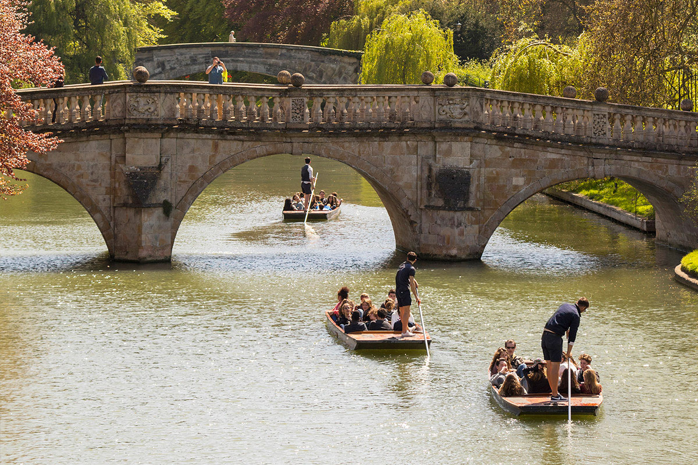

Punting is one of the most famous (and fun) activities in Cambridge. It describes the activity of going along a river in a punt (= a long boat with a flat bottom that is moved by pushing against the bottom of the river with a long pole). People go punting for pleasure rather than sport, and punting is especially popular in the British university towns of Oxford and Cambridge. Not convinced yet? Get more information here
